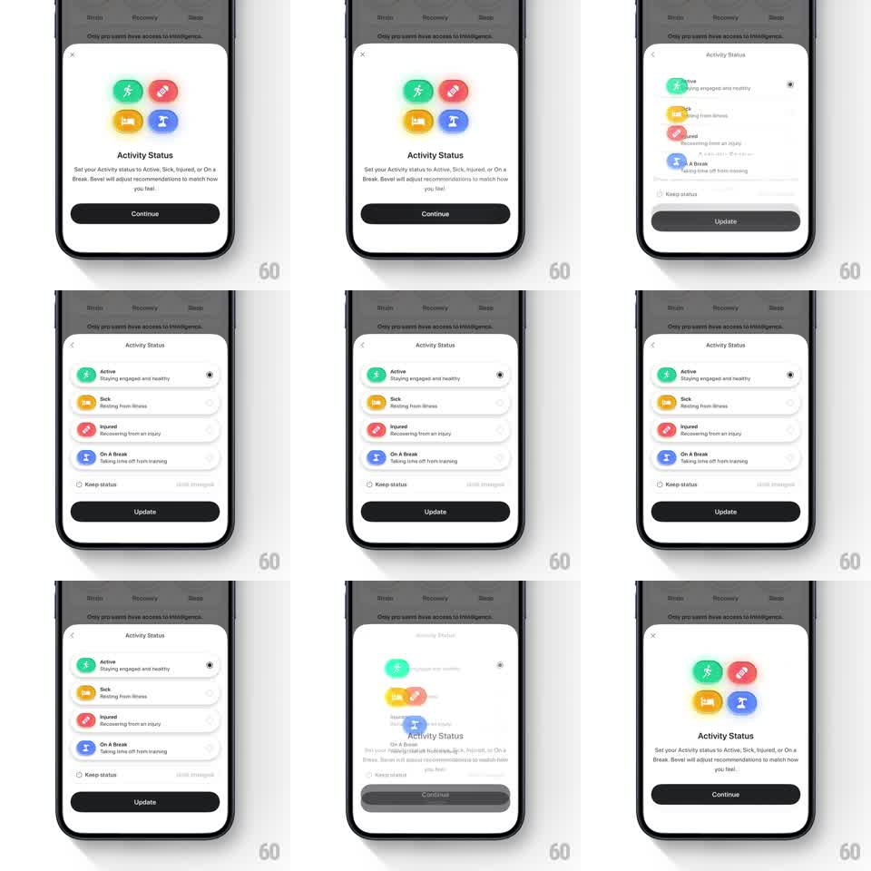

Media
Frame-by-frame

Rebuild this interaction 1:1: Bevel's Activity Status sheet - a 2x2 grid of colorful status icons (Active, Sick, Injured, On A Break) that morphs into a vertical radio list when the user taps Continue.

Rebuild this interaction 1:1: Bevel's Activity Status sheet - a 2x2 grid of colorful status icons (Active, Sick, Injured, On A Break) that morphs into a vertical radio list when the user taps Continue.
## Integration
Integration: stack-agnostic spec - springs given as stiffness/damping, timed motions as duration + curve; map every value to your framework and animation library of choice.
## Scene
Bottom sheet over a dimmed health dashboard. State A ("Activity Status"): a 2x2 grid of large rounded-square icons - green runner (Active), red pill (Sick), coral bandage (Injured), blue pause (On A Break) - above a description paragraph and a black Continue button. State B: the same four options as full-width list rows (icon left, name + one-line description, radio dot right), a "Keep status" footer row, and an Update button; a back chevron appears top-left.
## Motion spec
Pattern: shared-element morph from grid to list, ~500ms.
- Icon flight: each grid icon travels to its row's leading slot (spring ~320/22, 40ms stagger top-to-bottom), shrinking from ~56px to ~28px as it lands.
- Row reveal: each row's text and radio fade/slide in from the right as its icon lands (200ms, ease-out).
- Sheet resize: the sheet height grows from grid state to list state (spring ~300/24), header cross-fades, Continue morphs into Update (label cross-fade 150ms).
- Reverse: tapping back flies the icons home to the grid (same springs, reversed stagger).
## Calibration
- The icons are the shared element - text must never travel, only fade.
- Keep the stagger tight; a slow cascade turns one tap into a slideshow.
## Reduced motion
Cross-fade between grid and list states (250ms); sheet height animates without icon flight.
## Don't miss
- Row order in the list matches the grid reading order: Active, Sick, Injured, On A Break.
- The selected radio (Active, pre-selected) keeps its dot through the morph.